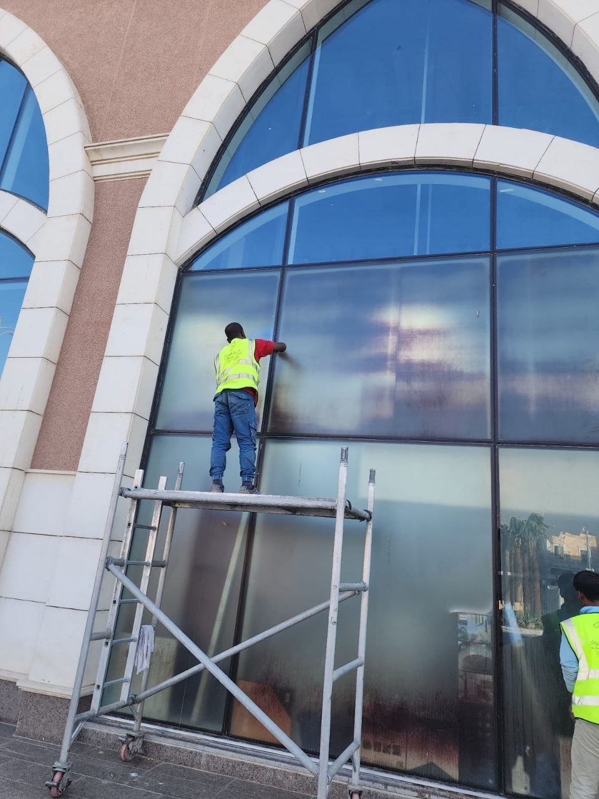
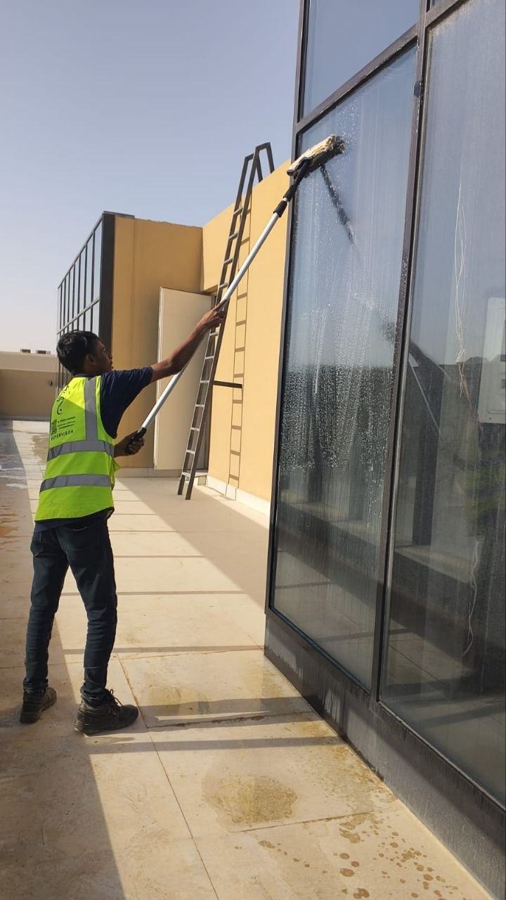

تتعرض واجهات الزجاج في المنازل والفلل والأبراج التجارية بمرور الوقت إلى تراكم بقايا اللاصق القديم وطلاء الحماية الذي يوضع عليها أثناء التسليم أو أعمال التشطيب والبناء، وتزداد صعوبة إزالة هذه البقايا كلما طالت فترة بقائها على السطح الزجاجي. ولهذا يبحث الكثير من ملاك العقارات والشركات في الرياض عن شركة تنظيف واجهات بالرياض تمتلك الخبرة الكافية والمعدات المتخصصة القادرة على إزالة اللاصق والطلاء دون ترك خدوش أو أضرار على سطح الزجاج.
ومع اتساع رقعة المشاريع السكنية والتجارية في مدينة الرياض، أصبحت الحاجة إلى شركة تنظيف واجهات بالرياض ذات خبرة عالية أمراً ضرورياً، خاصة أن أعمال إزالة اللاصق والطلاء عن الزجاج تحتاج إلى دقة كبيرة ومعرفة بأنواع المواد المستخدمة في كل حالة.
ومن هذا المنطلق تقدم شركة حلول وتميز للتنظيف بالرياض خدمة متخصصة في إزالة اللاصق القديم وطلاء الحماية والأصباغ عن الزجاج، باستخدام أدوات ومحاليل آمنة تحافظ على نظافة الزجاج ولمعانه الطبيعي دون أي أضرار جانبية.
وتُعد حلول وتميز للتنظيف من الشركات الرائدة التي تقدم حلولاً شاملة لإزالة اللاصق والطلاء عن جميع أنواع الواجهات الزجاجية، سواء كانت واجهات منازل وفلل أو واجهات أبراج وشركات ومحلات تجارية في مختلف أحياء الرياض.
فريق حلول وتميز أثناء إزالة اللاصق القديم من واجهة زجاجية بالرياض
ما هي خدمة إزالة اللاصق والطلاء عن الزجاج؟
يُقصد بهذه الخدمة إزالة جميع بقايا اللاصق والملصقات وطلاء الحماية والأصباغ التي تعلق على سطح الزجاج بعد عمليات التركيب أو التشطيب أو البناء، وذلك دون التأثير على شفافية الزجاج أو ترك أي خدوش عليه.
وتحتاج هذه العملية إلى خبرة دقيقة، لأن استخدام أدوات حادة أو مواد كيميائية غير مناسبة قد يتسبب في تلف الزجاج بشكل نهائي. ولهذا يفضل الكثير من العملاء التعامل مع شركة تنظيف واجهات بالرياض متخصصة تدرك الفرق بين أنواع اللاصق والطلاء وطريقة إزالة كل نوع منها بأمان.
كما تساعد خدمات إزالة اللاصق والطلاء التي تقدمها شركة حلول وتميز للتنظيف في:
- إزالة بقايا اللاصق القديم بالكامل
- إزالة طلاء الحماية بعد التسليم
- إزالة الأصباغ وبقع الدهانات عن الزجاج
- استعادة شفافية ولمعان الزجاج
- الحفاظ على سطح الزجاج دون خدوش
ولهذا يعتمد عدد كبير من العملاء في الرياض على فريق حلول وتميز للحصول على نتائج نظيفة واحترافية في هذا النوع من الأعمال الدقيقة.
لماذا يحتاج الزجاج إلى إزالة اللاصق بشكل متخصص؟
يظن بعض الأشخاص أن إزالة اللاصق من الزجاج مهمة بسيطة يمكن تنفيذها بأدوات منزلية عادية، إلا أن الحقيقة أن هذه المهمة تحتاج إلى خبرة ومعدات متخصصة، وهنا يظهر الفرق الحقيقي بين التنظيف العشوائي والاستعانة بـ شركة تنظيف واجهات بالرياض محترفة.
تصلب اللاصق مع مرور الوقت
تزداد صلابة اللاصق وطلاء الحماية كلما طالت فترة بقائه على الزجاج تحت أشعة الشمس، مما يجعل إزالته بالطرق التقليدية أمراً صعباً وقد يترك آثاراً واضحة.
خطر الخدوش الدائمة
استخدام شفرات أو أدوات حادة بطريقة غير صحيحة قد يترك خدوشاً دائمة على سطح الزجاج لا يمكن إصلاحها، ولهذا يعتمد فريق حلول وتميز على أدوات مخصصة ومحاليل آمنة.
اختلاف أنواع اللاصق والطلاء
يختلف طلاء الحماية المستخدم في التسليم عن لاصق الملصقات الدعائية أو لاصق أشرطة البناء، ولكل نوع طريقة إزالة مختلفة يعرفها فريق شركة ازالة طلاء الزجاج المتخصص جيداً.
حساسية الواجهات الكبيرة
في حالة الأبراج والمباني التجارية تحتاج عمليات إزالة اللاصق إلى معدات رفع ووسائل سلامة، وهو ما توفره شركة تنظيف واجهات بالرياض ذات الخبرة الطويلة في هذا المجال.


خطوات إزالة اللاصق والطلاء عن الزجاج باحترافية
تعتمد شركة حلول وتميز للتنظيف على منهجية واضحة ومدروسة عند تنفيذ أعمال إزالة اللاصق والطلاء عن الزجاج، بحيث يتم ضمان أفضل نتيجة دون أي ضرر على السطح الزجاجي. وتشمل الخطوات الأساسية التي يتبعها فريق شركة تنظيف واجهات بالرياض:
- معاينة نوع اللاصق أو الطلاء المطلوب إزالته وتحديد المادة المناسبة للتعامل معه
- تبليل السطح بمحلول مخصص يساعد على تليين اللاصق وتفكيك الطبقة اللاصقة
- استخدام أدوات كاشطة خاصة بالزجاج بزوايا آمنة لإزالة الطبقة دون خدش السطح
- معالجة البقع المتبقية بمواد تنظيف احترافية لإزالة أي أثر خفيف
- تلميع الزجاج بالكامل لاستعادة الشفافية واللمعان الطبيعي
- فحص نهائي للواجهة للتأكد من خلوها التام من أي بقايا لاصق أو طلاء
وبهذه الخطوات المدروسة تضمن شركة حلول وتميز للتنظيف تسليم واجهات زجاجية نظيفة تماماً وخالية من أي آثار أو خدوش، وهو ما يميزها كـ شركة ازالة طلاء الزجاج ذات سمعة موثوقة في سوق الرياض.
💡 ملاحظة مهمة: لا يُنصح باستخدام أدوات حادة أو مواد كيميائية قوية غير مخصصة للزجاج لإزالة اللاصق أو الطلاء، لأن ذلك قد يتسبب في خدوش دائمة أو تغير في وضوح الزجاج. ويفضل دائماً الاستعانة بـ شركة تنظيف واجهات بالرياض متخصصة مثل شركة حلول وتميز للتنظيف.
إزالة اللاصق من الزجاج للمنازل والفلل
تحتاج المنازل والفلل الجديدة عادة إلى إزالة طلاء الحماية ولاصق التغليف الذي يوضع على النوافذ والأبواب الزجاجية أثناء أعمال التشطيب والتسليم. وتوفر شركة حلول وتميز للتنظيف خدمة متكاملة لهذا النوع من الأعمال تشمل:
- إزالة طلاء الحماية من نوافذ الفلل والمنازل
- إزالة لاصق التغليف من الأبواب الزجاجية
- إزالة بقع الدهان والأصباغ الناتجة عن أعمال التشطيب
- تلميع الزجاج بعد الإزالة لإظهار الشفافية الكاملة
ويحرص فريق حلول وتميز على التعامل مع كل تفصيلة بدقة حتى تظهر واجهات المنزل بمظهر نظيف تماماً كما لو كانت جديدة، مع الحفاظ الكامل على سلامة الزجاج والإطارات المحيطة به.
شركة تنظيف واجهات بالرياض لإزالة اللاصق من المباني التجارية
تعتبر المباني التجارية والأبراج والمحلات من أكثر الأماكن التي تحتاج إلى شركة تنظيف واجهات بالرياض تمتلك خبرة في التعامل مع الواجهات الزجاجية الكبيرة والمرتفعة. وتشمل خدمات إزالة اللاصق للمنشآت التجارية:
- إزالة لاصق اللوحات الدعائية والملصقات التسويقية
- إزالة طلاء الحماية عن واجهات المحلات الجديدة
- إزالة بقايا الشريط اللاصق من واجهات المكاتب
- تنظيف وتلميع الواجهات الزجاجية للأبراج والمولات
وتستخدم شركة تنظيف واجهات بالرياض معدات رفع ونشل متخصصة تتيح الوصول إلى الطوابق العليا بأمان تام، مع الالتزام الكامل بمعايير السلامة المهنية أثناء تنفيذ أعمال إزالة اللاصق والطلاء على ارتفاعات مختلفة.
كما تحرص شركة حلول وتميز للتنظيف على تنسيق مواعيد التنفيذ بما يتناسب مع أوقات عمل الشركات والمحلات التجارية، لتقليل أي تأثير على النشاط اليومي للعملاء.
ويلجأ الكثير من أصحاب الأبراج التجارية ومراكز التسوق إلى التعاقد السنوي مع شركة تنظيف واجهات بالرياض بدلاً من الاكتفاء بخدمة لمرة واحدة، وذلك لضمان بقاء الواجهات الزجاجية نظيفة وخالية من أي بقايا لاصق أو طلاء طوال العام، خاصة في المناطق التجارية المزدحمة التي تتعرض واجهاتها للملصقات الدعائية بشكل متكرر.
أدوات ومعدات شركة ازالة طلاء الزجاج المتخصصة
يعتمد نجاح عملية إزالة اللاصق والطلاء عن الزجاج بشكل كبير على جودة الأدوات المستخدمة. ولهذا تعتمد شركة حلول وتميز للتنظيف على مجموعة من الأدوات والمعدات المتخصصة التي تضمن نتائج احترافية دون أي ضرر على الزجاج.
سكينة الزجاج المتخصصة
أداة ذات شفرة رفيعة بزاوية مدروسة تسمح بكشط اللاصق دون خدش السطح الزجاجي.
محاليل إذابة اللاصق
مواد مخصصة تساعد على تليين اللاصق والطلاء المتصلب دون التأثير على الزجاج أو الإطارات.
أدوات التلميع الاحترافية
تستخدم بعد الإزالة لاستعادة اللمعان الطبيعي وإزالة أي أثر خفيف متبقٍ.
معدات الرفع والسلامة
تشمل السلالم المتخصصة وأحزمة السلامة اللازمة لتنظيف الواجهات المرتفعة بأمان.
وبفضل هذه الأدوات المتخصصة، تمكنت شركة حلول وتميز للتنظيف من ترسيخ اسمها بين عملائها كـ شركة ازالة طلاء الزجاج يمكن الوثوق بها في تنفيذ الأعمال الدقيقة والحساسة على مختلف أنواع الزجاج.
عوامل تحديد تكلفة إزالة اللاصق من الزجاج بالرياض
تختلف تكلفة خدمة إزالة اللاصق والطلاء عن الزجاج من مشروع لآخر بناءً على عدة عوامل، ولهذا تحرص شركة ازالة طلاء الزجاج على معاينة الموقع قبل تحديد السعر النهائي بدقة، لضمان الشفافية الكاملة مع العميل قبل بدء التنفيذ.
- مساحة الواجهة الزجاجية المطلوب تنظيفها
- نوع اللاصق أو الطلاء ومدى صلابته وتصلبه مع الزمن
- ارتفاع الواجهة وهل تحتاج إلى معدات رفع خاصة
- عدد الطبقات المتراكمة من اللاصق أو الدهان
- الموقع الجغرافي داخل الرياض ومدى سهولة الوصول إليه
وتوفر شركة ازالة طلاء الزجاج المتخصصة عروض أسعار واضحة بعد المعاينة المباشرة، مع الحرص على تقديم قيمة حقيقية مقابل الجودة العالية للتنفيذ. كما تتيح شركة تنظيف واجهات بالرياض للعملاء إمكانية الحصول على استشارة مجانية عبر الهاتف أو الواتساب لتقدير التكلفة التقريبية قبل تحديد موعد الزيارة الميدانية.
ومن المهم التنويه إلى أن انخفاض السعر بشكل كبير عن المعتاد قد يكون مؤشراً على استخدام أدوات أو مواد غير مناسبة قد تضر بالزجاج على المدى الطويل، ولهذا ينصح دائماً باختيار جهة موثوقة ذات سجل تجاري وخبرة واضحة في هذا المجال بدلاً من التركيز على السعر الأقل فقط.
نصائح للحفاظ على الزجاج بعد إزالة اللاصق والطلاء
بعد الانتهاء من عملية إزالة اللاصق وتلميع الزجاج، هناك بعض النصائح البسيطة التي تساعد في الحفاظ على النتيجة لأطول فترة ممكنة، وينصح بها فريق العمل عادة عند تسليم المشروع للعميل:
- تجنب لصق أي ملصقات أو أشرطة جديدة مباشرة على الزجاج دون حماية مناسبة
- الحرص على التنظيف الدوري بمواد لطيفة لا تحتوي على مواد كاشطة قوية
- تجنب استخدام أدوات معدنية حادة عند إزالة أي بقايا بسيطة مستقبلاً
- الاستعانة بجدول تنظيف دوري مع جهة متخصصة للحفاظ على مظهر الواجهات
وتقدم شركة تنظيف واجهات بالرياض أيضاً خدمات صيانة ومتابعة دورية للعملاء الذين يرغبون في الحفاظ على واجهاتهم الزجاجية بأفضل حالة على مدار العام، وهو ما يجعل التعامل مع جهة واحدة موثوقة أكثر جدوى من تكرار البحث عن حلول مؤقتة في كل مرة.
أنواع اللاصق والطلاء التي تتعامل معها شركة حلول وتميز للتنظيف
تختلف طبيعة اللاصق والطلاء من مشروع لآخر، ولهذا توفر حلول وتميز للتنظيف حلولاً تناسب جميع الحالات، ومنها:
- طلاء الحماية الأبيض أو الأزرق الموضوع على الزجاج أثناء التسليم
- لاصق ملصقات المصانع والشركات المصنعة للزجاج
- لاصق اللوحات الدعائية والإعلانات على واجهات المحلات
- بقايا الشريط اللاصق المستخدم أثناء أعمال البناء والدهان
- بقع الأصباغ والدهانات الناتجة عن أعمال التشطيب
ومهما كان نوع اللاصق أو الطلاء، يمتلك فريق شركة تنظيف واجهات بالرياض المعرفة الكافية بالمادة المناسبة لإزالته دون التأثير على جودة الزجاج أو مظهره النهائي.
مقارنة بين الإزالة الاحترافية والطرق التقليدية
| المعيار | التنفيذ الاحترافي المتخصص | الطرق التقليدية |
|---|---|---|
| خطر الخدوش | منعدم تقريباً بفضل الأدوات المخصصة | مرتفع مع الأدوات الحادة العادية |
| الوقت المستغرق | أسرع بفضل الخبرة والمعدات | وقت أطول ونتيجة غير مضمونة |
| جودة النتيجة النهائية | لمعان وشفافية كاملة | قد تترك آثاراً باهتة أو خدوش |
| الأمان على الارتفاعات | معدات سلامة معتمدة | غير مناسبة للواجهات المرتفعة |
ومن خلال هذه المقارنة يتضح الفرق الكبير بين الاعتماد على شركة حلول وتميز للتنظيف المتخصصة والاعتماد على وسائل تنظيف منزلية عشوائية قد تضر بالزجاج بدلاً من تحسين مظهره.
مناطق تغطية خدمة إزالة اللاصق من الزجاج بالرياض
تقدم شركة تنظيف واجهات بالرياض خدماتها في جميع أحياء ومناطق العاصمة، حيث يغطي فريق حلول وتميز مناطق واسعة تشمل:
ويتيح هذا الانتشار الواسع لـ شركة حلول وتميز للتنظيف الاستجابة السريعة لطلبات العملاء في أي منطقة بالرياض، سواء كانت المشاريع سكنية صغيرة أو واجهات تجارية كبيرة تحتاج إلى فرق عمل متعددة.
الأسئلة الشائعة حول إزالة اللاصق من الزجاج
لماذا يثق عملاء الرياض في فريق العمل؟
على مدار سنوات من العمل في مجال تنظيف وتلميع الواجهات، اكتسب فريق العمل خبرة عملية واسعة في التعامل مع مختلف أنواع المشكلات التي تواجه أصحاب المنازل والمنشآت التجارية، بدءاً من بقايا اللاصق البسيطة وحتى الطبقات المتراكمة الصعبة من الطلاء والدهانات القديمة.
ويحرص الفريق على الالتزام بالمواعيد المتفق عليها مع العملاء، والوصول في الوقت المحدد بالمعدات والأدوات الكاملة اللازمة لإنجاز المهمة دون الحاجة إلى تأجيل أو تكرار الزيارة. كما يتم تدريب أعضاء الفريق باستمرار على أحدث الأساليب والمواد الآمنة للتعامل مع الزجاج بمختلف أنواعه وسماكاته.
ومن أبرز ما يميز تجربة العملاء أيضاً هو الشفافية الكاملة في تحديد السعر منذ البداية، دون أي رسوم مخفية أو مفاجآت بعد انتهاء العمل. فبعد المعاينة المبدئية يتم الاتفاق على السعر النهائي بوضوح تام، ولا يتغير هذا السعر إلا في حال اكتشاف حالة إضافية لم تكن ظاهرة أثناء المعاينة الأولى، ويتم إبلاغ العميل بذلك فوراً قبل المتابعة.
بالإضافة إلى ذلك، يوفر الفريق خدمة ما بعد التنفيذ للرد على أي استفسارات أو ملاحظات قد تظهر خلال الأيام الأولى بعد الانتهاء من العمل، وذلك حرصاً على رضا العميل الكامل عن النتيجة النهائية. وقد ساهمت هذه السياسة في بناء قاعدة عملاء دائمين يعتمدون على نفس الفريق في كل مرة يحتاجون فيها إلى خدمات تنظيف أو صيانة الواجهات الزجاجية.
ولا يقتصر عمل الفريق على المشاريع الفردية فقط، بل يتعامل أيضاً مع مقاولي التشطيبات ومكاتب إدارة المرافق التي تحتاج إلى جهة موثوقة تنفذ أعمال التسليم النهائي للمشاريع السكنية والتجارية بجودة عالية وفي الوقت المحدد، وهو ما يجعل التنسيق المسبق مع الفريق خطوة مهمة عند التخطيط لأي مشروع جديد يتضمن واجهات زجاجية واسعة.
الخاتمة
إذا كنت تبحث عن افضل شركة ازالة اللاصق من الزجاج بالرياض تجمع بين الخبرة والدقة والأدوات المتخصصة، فإن شركة حلول وتميز للتنظيف بالرياض توفر لك جميع الحلول اللازمة لإزالة اللاصق وطلاء الحماية بأمان تام دون خدوش.
سواء كنت تحتاج إلى شركة تنظيف واجهات بالرياض لتنظيف نوافذ منزلك أو فيلتك، أو تبحث عن شركة تنظيف واجهات بالرياض متخصصة في واجهات الأبراج والمكاتب والمحلات التجارية، فإن فريق العمل يمتلك الخبرة والمعدات المناسبة لتحقيق أفضل النتائج.
كما تقدم شركة ازالة طلاء الزجاج خدمات متخصصة تشمل إزالة طلاء الحماية والأصباغ وبقايا الشريط اللاصق واستعادة اللمعان الطبيعي لمختلف أنواع الزجاج. وتحرص شركة حلول وتميز للتنظيف على استخدام أحدث المحاليل والأدوات لضمان نتيجة نهائية تعكس الاحترافية والجودة.
وتواصل شركة حلول وتميز للتنظيف تقديم خدماتها في جميع أحياء الرياض مع الاعتماد على أحدث المعدات وأفضل أساليب العمل الحديثة، بينما يواصل فريق شركة تنظيف واجهات بالرياض تنفيذ المشاريع السكنية والتجارية باحترافية عالية ونتائج ترضي العملاء وتمنح الواجهات الزجاجية مظهراً جديداً يعكس النظافة والفخامة.
وفي النهاية، تبقى نظافة الواجهات الزجاجية عنواناً مباشراً على مستوى الاهتمام بالمظهر العام للمبنى، سواء كان منزلاً بسيطاً أو برجاً تجارياً كبيراً. ولهذا فإن الاستثمار في خدمة متخصصة لإزالة اللاصق والطلاء عن الزجاج ليس مجرد رفاهية، بل خطوة عملية تحافظ على قيمة العقار وتمنحه مظهراً لائقاً يعكس جودة التشطيب والاهتمام بالتفاصيل على المدى الطويل. لمزيد من الاستفسارات أو لحجز موعد المعاينة، يمكن التواصل مباشرة عبر الاتصال أو الواتساب في أي وقت.